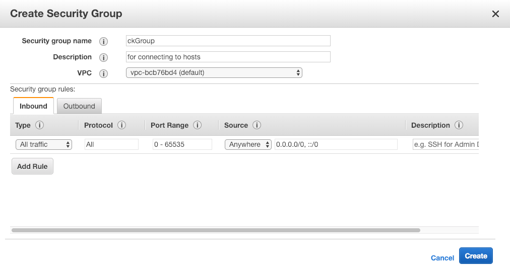
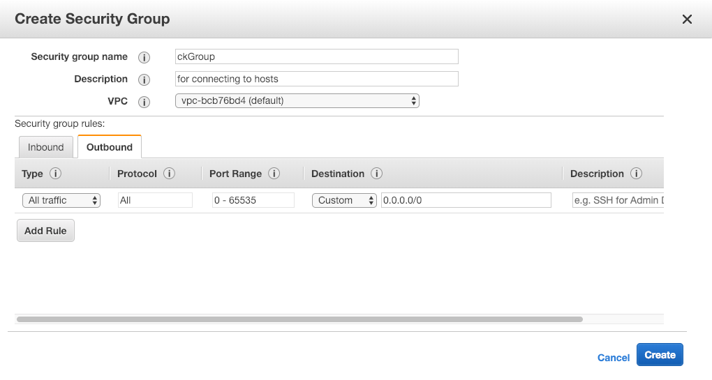

In the quickstart guide we learned how to set up a new CryptoKernel environment, make a wallet, and mine K320. In this guide, we’ll learn how to make us of Cryptokernel’s multicoin functionality to bootstrap our own coin just by fiddling with a few config files, no C++ required.
Genesis Block
A genesis block is the first block of a new blockchain. Keep in mind that by creating this new coin, we will be creating an entirely new blockchain with an entirely different history than that of K320. Cryptokernel will differentiate between K320 and our new coin by following the blockchain all the way back down to this original block. So, the first thing we’ll need to change for our new coin is the genesis block. Copy the genesisblock.json file, shown below, into a new file called genesisblockDoc.json.
K320 Genesis Block
{
"coinbaseTx" : {
"outputs" : [
{
"data" : {
"contract" : null,
"publicKey" : "BDgkCUSogr3PrCJtY5P0wNsxfMF47I4ZGnJp/nn/CT4SerSibE0MKptXciR4zZCrpNB85xychJB4EURSR2TpYUs=",
"message" : "For the many..."
},
"nonce" : 2461443158, // arbitrary number
"value" : 9999986946
}
],
"timestamp" : 1501282954
},
"consensusData" : null,
"data" : null,
"height" : 1,
"previousBlockId" : "0",
"timestamp" : 1501282954
}
Since the hash of the genesis block is what really counts in a blockchain we could simply change some numbers in any of the fields and get a new hash, but let’s go through the data of the genesis block so we can understand what’s happening and what we ought to change. If you’re already familiar with what genesis blocks are, you can copy the new genesis block below and skip ahead to the next section, if not, stay here and we’ll learn about what’s happening in the JSON above.
First, we see the that this object contains another coinbaseTx object. This object is a representation of a coinbase transaction, transaction often gets shortened to tx. Coinbase transaction are transactions that create coins and send them out to whatever public key is listed in the data object. One interesting feature of coinbase transactions is that they never have any inputs. Usually when we make transactions we list our own unspent transaction outputs, often abbreviated as utxo, as the input to a transaction as proof that we own the coins we are spending. These regular transactions are zero-sum because the amount that’s lost by the sender is equal to the amount gained by the receiver. A coinbase transaction is positive sum because it adds money to the total supply.
From this, we now know that this genesis block sent 99.99986946 K320 to the public key BDgkCUSogr3PrCJtY5P0wNsxfMF47I4ZGnJp/nn/CT4SerSibE0MKptXciR4zZCrpNB85xychJB4EURSR2TpYUs=. The value listed in the actual data is in the smallest monetary unit, like cents for dollars or satoshis for bitcoins. Let’s change the public key in our new genesis block to our own public key that’s in config.json. Also, let’s change the amount of coins we create to 50 coins, or 500000000 units. You can also change the message if you like. I’ve also changed the timestamp to the current Unix time at the time of writing.
Look at the height field. This tells us the height, in blocks, of the block we’re currently viewing. Not surprisingly, the genesis block has height 1, and has the blockchain grows and new blocks are created the height will increase. The current height of the K320 blockchain is 300821!
Now that we’ve made some changes and understand a bit about the genesis block we should be all set.
New Genesis Block
{
"coinbaseTx" : {
"outputs" : [
{
"data" : {
"contract" : null,
"publicKey" : "BLBPmhIDXdwenbdAxbAWNXpFHqAWmPlOGUQ8k7VEIegqq0+VfDXJZEPdEdGsmlwdDlLeZmrbeB/koDFDQHoXlQA=",
"message" : "Our new coin!"
},
"nonce" : 2461443158,
"value" : 5000000000
}
],
"timestamp" : 1548440980
},
"consensusData" : null,
"data" : null,
"height" : 1,
"previousBlockId" : "0",
"timestamp" : 1548440980
}
Configuration
In the following section, I’ll be going explaining each of the entries in the below config.json file so we can understand exactly what we’re doing by editing this file.
Base Configuration
{
"coins" :
[
{
"blockdb" : "./blockdb",
"consensus" :
{
"params" :
{
"blocktime" : 150
},
"type" : "kgw_lyra2rev2"
},
"genesisblock" : "genesisblock.json",
"name" : "K320",
"peerdb" : "./peers",
"port" : 49000,
"rpcport" : 8383,
"subsidy" : "k320",
"walletdb" : "./addressesdb"
}
],
"rpcpassword" : "password",
"rpcuser" : "ckrpc",
"verbose" : false,
"pubKey": "BGOjpbmxzX26d7zHmNxy3RWb94MzTciGhF7y8ehF2EH2BlTDStCrAhSmmfmbaWDuRYqagRViAhVj6QhOsfp4oT4=",
"miner": false
}
Coins
The coins array is a list of objects that represent a single coin. Cryptokernel can support many coins running in a single instance of ckd, so there’s limit on how many coin definitions we can include in this array.
blockdb is a path to the folder that contains the blockchain database.
consensus is an object that contains information about what consensus algorithm our coin will implement. If you’re wondering what a consensus algorithm is you can check out explanations of the most popular ones: Proof of Work and Proof of Stake.
blocktime indicates about how often a new block should be found in seconds, so 2.5 minutes on average for K320.
type indicates which consensus algorithm our coin will use. Currently, Cryptokernel only supports the kgw_lyrarev2, but in the future we could choose between PoW, PoS, and many other algorithms right here in the config file.
genesisblock is the name of the file that contains the genesis block definition, in our case this will be genesisblockDoc.json. name is the name of our new coin.
peerdb is a path to the folder that contains our peers that we try to connect to and sync our blockchains with.
port is the port number that Cryptokernel uses to contact other nodes. We’ll have to change this if we’re running multiple coins.
rpcport is the port that ckd uses when making rpc calls like getinfo and sendtoaddress. These are just api calls that make interacting with ckd easier.
subsidy is a function that returns a block reward given a block height. Currently the only subsidy function that is available is k320. For a description of k320 you can look here and for the definition in code you can go here.
walletdb is a path to the folder that contains all of the wallet information for this node and coin.
New Configuration
{
"coins" :
[
{
"blockdb" : "./blockdbDoc",
"consensus" :
{
"params" :
{
"blocktime" : 150
},
"type" : "kgw_lyra2rev2"
},
"genesisblock" : "genesisblockDoc.json",
"name" : "DocCoin",
"peerdb" : "./peersDoc",
"port" : 48000,
"rpcport" : 8380,
"subsidy" : "k320",
"walletdb" : "./addressesdbDoc"
}
],
"rpcpassword" : "password",
"rpcuser" : "ckrpc",
"verbose" : true,
"pubKey": "BGOjpbmxzX26d7zHmNxy3RWb94MzTciGhF7y8ehF2EH2BlTDStCrAhSmmfmbaWDuRYqagRViAhVj6QhOsfp4oT4=",
"miner": false
}
Notice how we’ve changed the locations of the blockdb, peerdb, and walletdb. If you haven’t previously run k320 on this given instance you wouldn’t need to change these, but since I assume that you’ve done the quickstart guide we’ll have to change them. We’ve also changed the genesisblock to point to our newly created json file, the name, the port, and the rpcport. At this point we should be ready to go. Make sure you have replaced rpcpassword and rpcuser to whatever you have set on your instance. Then we’ll simply navigate to our CryptoKernel folder and run the ./ckd command. Here we’ll follow the same steps in the quickstart guide to create a wallet password. After you’ve done that, you can then go back into the config.json file and set verbose to true. This will allow us to see exactly what’s going on in the ckd. After this, running ckd should get you an output similar to this.
~/CryptoKernel $ ./ckd
Fri Jan 25 20:53:49 2019 INFO blockchain::verifyTransaction(): Verified successfully
Fri Jan 25 20:53:49 2019 INFO blockchain::submitBlock(): successfully submitted block: {
"coinbaseTx" : "39645948279aa6f0aa9c215b2d861dd58b5ca005a77e2df32e7d7abbb8cf1f40",
"consensusData" : null,
"data" : null,
"height" : 1,
"previousBlockId" : "0",
"timestamp" : 1548440980
}
Fri Jan 25 20:53:49 2019 INFO blockchain(): Successfully imported genesis block
Fri Jan 25 20:53:50 2019 INFO Network(): Current height: 1, best height: 1, start height: 1
Fri Jan 25 20:53:50 2019 INFO Wallet(): Wallet upgrade started 0 -> 2
Enter new wallet passphrase (min 8 chars): Fri Jan 25 20:53:50 2019 INFO Consensus::PoW::miner(): found a block! Submitting to blockchain
Fri Jan 25 20:53:50 2019 INFO blockchain::verifyTransaction(): Verified successfully
Fri Jan 25 20:53:50 2019 INFO blockchain::submitBlock(): successfully submitted block: {
"coinbaseTx" : "81e1a5a76a64ad34bfe853979be595d5e37cf3fc0e0fb8ea87119dbb9c1de2e8",
"consensusData" :
{
"nonce" : 9164,
"target" : "fffffffffffffffffffffffffffffffffffffffffffffffffffffffffff",
"totalWork" : "fffff00000000000000000000000000000000000000000000000000000000000"
},
"data" : null,
"height" : 2,
"previousBlockId" : "ade035e2f63cf24ecec5ddd3d4ae1f3bae1aeffc87665808f8bdde36d92cbd5a",
"timestamp" : 1548440980
}
Here we can see that the genesis block gets verified and submitted to the blockchain! Our miner then finds another block and submits it to the blockchain, but before we can reap the rewards of mining we have to configure mining like we did in the quickstart guide. When executing rpc commands in the terminal through ckd like getinfo or account, make sure to either have a second terminal open or have ckd running as a daemon, using the -daemon flag on start, with verbose set to false in your config file.
e.g.
~/CryptoKernel $ ./ckd -p 8380 account mining_rewards
Please enter your wallet passphrase: ********
{
"balance" : "0",
"keys" :
[
{
"privKey" :
{
"cipherText" : "qtWvIRW3E9wHDclGPZ4GTjAolBjVT8Dpe4st8SUzBahv7oE8SpQ9eeUlNtjpRLLZ",
"iv" : "0/GiyAoK3D0OvozHALGK7g==",
"salt" : "MJOLKLDeQWVZpU8TQ0+eruKbov3Ub+gB16KDU5lelD0="
},
"pubKey" : "BDdUhYtSgftZzhzQo1DKZyK4B3GkM8WnaP0IOv9oFmcWxXXGlmeFoguLmHrVSY8/56BxH8Dpz3Lyw7cKw/SjPRM="
}
],
"name" : "mining_rewards"
}
Once you have this, copy the public key and paste it into your config.json so ckd knows to send the mining rewards there. After running ./ckd again you should see your balance going up.
~/CryptoKernel $ ./ckd -p 8380 account mining
Please enter your wallet passphrase: ********
{
"balance" : "199.99909",
"keys" :
[
{
"privKey" :
{
"cipherText" : "LV+o/r/nAvlMweHCdAboIeJiOqCr2fTcmvXQWELFOLrRMsf9o4hm8fVmRrO3hZRr",
"iv" : "fn1h/MGxoBGxjwNY6DH3BQ==",
"salt" : "osYdFlQGhqIstluaQT6b3QaU30HB4GANbgkPr7DV3VM="
},
"pubKey" : "BPrCvlFrpmC1g8SDQSoW2j7ZaIW2Va1cKrI556lex7QGBZvJYLhSQHglfhTf+HWyMMg8klxFo67LGC4V6YVdvNg="
}
],
"name" : "mining"
}
Since you’ll be the only one mining, you’ll get all the block rewards. Now, you can create a new account under the same instance and start the transactions guide, or read on to learn about linking other nodes with your current node.
##Peers
When you run ckd in verbose mode you should be seeing a lot of failed attempts to connect with other peers. It probably looks something like this:
Wed Jan 30 11:25:16 2019 WARNING Network(): Failed to connect to 18.85.22.252
Wed Jan 30 11:25:16 2019 INFO Network(): Attempting to connect to 159.65.161.209
Wed Jan 30 11:25:16 2019 WARNING Network(): Failed to connect to 159.65.161.209
Wed Jan 30 11:25:16 2019 INFO Network(): Attempting to connect to 185.202.172.181
Wed Jan 30 11:25:16 2019 WARNING Network(): Failed to connect to 185.202.172.181
This is happening because K320 comes with a list of predefined nodes whose IP addresses are listed in the peers.txt file. These peers are known to be reliable and up-to-date on the K320 blockchain. Since we are no longer on the K320 blockchain, these nodes will be of no use to us, so we can delete them out of the peers.txt and delete our current peersdb. Now, when we run with the miner turned on the output should look something like the output below. All we should be seeing is the mining process.
Thu Jan 31 11:00:15 2019 INFO Wallet::digestBlock(): Digesting block 4
Thu Jan 31 11:00:26 2019 INFO Network(): Current height: 4, best height: 4, start height: 4
Thu Jan 31 11:00:34 2019 INFO Consensus::PoW::miner(): current block is stale, generating a new one. HR: 69.021851 KH/s
Thu Jan 31 11:00:37 2019 INFO Consensus::PoW::miner(): found a block! Submitting to blockchain
Thu Jan 31 11:00:37 2019 INFO blockchain::verifyTransaction(): Verified successfully
Thu Jan 31 11:00:37 2019 INFO blockchain::submitBlock(): successfully submitted block: {
"coinbaseTx" : "6b82288fbcfdd347660bc88e6339cf478c53e2cacdde40eb47faf37186d66df2",
"consensusData" :
{
"nonce" : 1664334,
"target" : "fffffffffffffffffffffffffffffffffffffffffffffffffffffffffff",
"totalWork" : "3ffffc00000000000000000000000000000000000000000000000000000000000"
},
"data" : null,
"height" : 5,
"previousBlockId" : "8ca4281064d7c957b9c2b97d2d4d19dcc16f4acdb2194c9964974394c0253cda",
"timestamp" : 1548950434
}
Thu Jan 31 11:00:38 2019 INFO Wallet::digestBlock(): Digesting block 5
Thu Jan 31 11:00:43 2019 INFO Consensus::PoW::miner(): found a block! Submitting to blockchain
Thu Jan 31 11:00:43 2019 INFO blockchain::verifyTransaction(): Verified successfully
Thu Jan 31 11:00:43 2019 INFO blockchain::submitBlock(): successfully submitted block: {
"coinbaseTx" : "e176c10e79fcf9eee31bd0add0ef540921a92f9fb4fc14ecc28fdf1854cef2e8",
"consensusData" :
{
"nonce" : 439531,
"target" : "fffffffffffffffffffffffffffffffffffffffffffffffffffffffffff",
"totalWork" : "4ffffb00000000000000000000000000000000000000000000000000000000000"
},
"data" : null,
"height" : 6,
"previousBlockId" : "8cc2f87a170997137df1dc68ab9500a4140ed0d43ef13d86e6f6fc0518baa034",
"timestamp" : 1548950437
}
If you have another computer with a different IP address or a friend that is willing to setup their own instance, then you can populate your peers file with that information and start communicating on the network. If not, we’ll see how to set up an AWS ec2 instance that will communicate with us.
Creating a Peer on AWS
This guide assumes you’re familiar with spinning up new instances on AWS. Also, this exercise should not exceed the free tier limits that AWS imposes. First, select a micro ec2 linux installation. This guide will be using Ubuntu 16.04. Now that we have a new instance, we need to install Cryptokernel. You can either build from the source code using git clone https://github.com/mit-dci/CryptoKernel.git or you can get the zipped executable, details below.
$ wget https://github.com/mit-dci/CryptoKernel/releases/download/v0.2.0/cryptokernel-v0.2.0-linux-amd64.zip
$ sudo apt install unzip
$ unzip cryptokernel-v0.2.0-linux-amd64.zip
$ mv cryptokernel-v0.2.0-linux-amd64/ cryptokernel
Keep in mind that the link to the zip download will change in the future and you may need to change it to keep up with the latest release. Now that we have our instance, we’ll want to copy over our genesisblockDoc.json and our config.json files.
$ scp -i path/to/your/key.pem ~/path/to/your/config.json ubuntu@ec2-52-15-112-14.us-east-2.compute.amazonaws.com:~/
$ scp -i path/to/your/key.pem ~/path/to/your/genesisblockDoc.json ubuntu@ec2-52-15-112-14.us-east-2.compute.amazonaws.com:~/
Delete the existing config.json from the cryptokernel directory and then move the copied files.
$ mv config.json cryptokernel/
$ mv genesisblockDoc.json cryptokernel/
Now we have a node for our coin, but it can’t communicate with our first node. We need to configure a security group within AWS that allow traffic into and out of our node. We’ll create a security group called ckGroup that does this, shown below.
Inbound Rule: 
Outbound Rule: 
Once that’s been created copy, the public IPv4 address of your ec2 instance into the peers.txt file of your original instance. Run ckd on both machines and watch as they connect to each other.
Local machine:
Thu Jan 31 12:26:37 2019 INFO Network(): Attempting to connect to 52.15.112.14
Thu Jan 31 12:26:37 2019 WARNING Network(): Failed to connect to 52.15.112.14
Thu Jan 31 12:26:37 2019 INFO Network(): Attempting to connect to 52.15.112.14
Thu Jan 31 12:26:37 2019 WARNING Network(): Failed to connect to 52.15.112.14
Thu Jan 31 12:26:37 2019 INFO Network(): Attempting to connect to 52.15.112.14
Thu Jan 31 12:26:37 2019 WARNING Network(): Failed to connect to 52.15.112.14
Thu Jan 31 12:26:37 2019 INFO Network(): Attempting to connect to 52.15.112.14
Thu Jan 31 12:26:37 2019 INFO Network(): Successfully connected to 52.15.112.14
Thu Jan 31 12:26:38 2019 INFO Network(): Discovered new peer: 204.9.220.50
AWS machine:
Thu Jan 31 17:26:37 2019 INFO Network(): Current height: 3, best height: 3, start height: 3
Thu Jan 31 17:26:37 2019 INFO Network(): Peer connected from 204.9.220.50:65171
Thu Jan 31 17:26:38 2019 INFO Wallet::digestBlock(): Digesting block 3
Thu Jan 31 17:26:39 2019 INFO Network(): Discovered new peer: 52.15.112.14